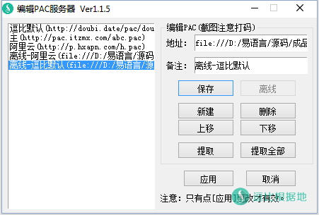
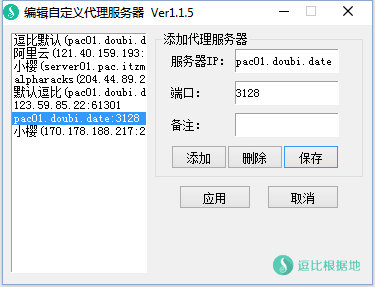
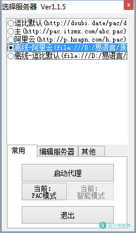

听说了 某叶香蕉 用 开源的squid技术 去吹自主原创开发黑科技啥的！叫什么Sq**dPress，现在还搞了个什么技术培训，永久六七百，就去捞钱，什么VIP“终身”几百元的，我也是醉了。还说什么独创的Squid技术，远超shadowsocks、vpn等等。
我记得他当初用 开源的GoAgent 写了个付费软件，结果因为在海外社交网站发布侮辱dang的言论，被抓了几个月。放出来后拿着正火的 开源Shadowsocks源码，写了个软件，先免费宣传，然后搞公众号关注送Shadowsocks账号啥的，然后就开始卖了也是几百块/年，随后不到两个月就又失踪了，再出现就是Sq**dPress了，我即使打码你们也应该知道是什么软件。：）
实在是太不要脸了，于是我就也写了PAC管理器——SquidPAC Tools（就为打他脸）。
软件介绍
SquidPAC Tools是一个管理PAC的软件，分为PAC模式和自定义PAC模式。
在PAC模式中，可以自由添加管理PAC网址或者PAC脚本内容；带有PAC离线功能，可以将PAC离线到本地直接调用，可以加快判断时间；
在自定义PAC模式中，可以自由添加管理代理服务器，然后在一个单独的PAC中自由替换代理服务器（PAC是由代理服务器+网址组成的，当你访问其中一个网址的时候，会走代理服务器）。
当前版本：1.1.8
主要功能：
- 系统代理设置
- 离线本地PAC
- 多服务器切换
- 支持HTTP代理
- 支持智能和全局模式
- PAC模式和自定义模式
截图展示



使用方法
使用方法很简单，默认带有我自建的服务器，打开软件后直接点托盘菜单的启动代理！就可以科学上网了！
使用方法上比较接近shadowsocks的使用方法，所以使用过SS的应该很容易上手的。
右键托盘图标显示主要操作菜单。双击托盘图标会根据当前的模式打开对应的编辑窗口。（部分Win10会出现兼容性问题无法显示菜单，请按 Alt+~ 键呼出！如果不需要可以在其他选项卡中关闭！）
PAC模式
右键托盘图标，点击编辑PAC服务器，然后添加按钮，如果你要添加的是一个PAC网址，就点[是]，如果是PAC脚本内容，就点[否]，然后输入PAC网址或者PAC脚本内容（记得点应用才会生效）。然后右键托盘图标并点击你添加的PAC服务器，再点击启动代理便可以使用PAC了！并且可以自由切换代理。
自定义PAC模式
右键托盘图标，点击自定义模式，然后点击编辑自定义，添加代理服务器（记得点应用才会生效），然后右键托盘图标并点击你添加的代理服务器，再点击启动代理便可以使用PAC了！并且可以自由切换代理。
自定义PAC模式就是，你只要有HTTP代理服务器，你就可以用PAC的功能。因为单独使用代理服务器是全局的，而PAC则会根据文件里的网址来判断是不是需要用代理服务器，PAC是由代理服务器+网址组成的，这个模式就是替换一个单独的PAC里的代理服务器。
全局模式
全局模式只能在自定义PAC模式下使用，如果要PAC模式使用全局模式，请打开PAC模式服务器编辑窗口，然后选中你要使用的全局PAC后点 提取 或者点 全部提取，这时候在自定义PAC模式的列表里就可以找到 这个/全部 的代理服务器了（因为如果直接读取在线/离线PAC中的代理服务器，效率太低，所以只能这样子干）。
智能模式
智能模式也就是默认的模式，也就是走PAC代理。
更新内容
版本1.1.8 日期2016年11月22日
- 修复检测更新功能。
- 删除默认PAC和代理服务器。
Tip：因为更换域名，所以检测更新失效了，而默认的PAC和代理服务器，我也不在维护了。
版本1.1.7 日期2016年3月20日
- 新增记录关闭时当前模式，下次启动会自动切换。
- 修复第一次添加PAC服务器无法编辑的BUG。
版本1.1.5 日期2016年3月9日
- 锁定默认服务器，自动检测默认服务器更新。
- 优化默认服务器获取。
- 优化检测更新功能。
版本1.1.4 日期2016年3月8日
- 增加编辑默认PAC功能（可以自己编辑PAC添加你想要的网址了，改完记得点[重载 默认PAC]按钮）。
- 修复模式切换时托盘提示信息显示不正确BUG。
- 修复切换代理服务器（智能模式）/重载默认PAC时不能立即生效的BUG。
- 优化路由器和ADSL判断逻辑。
- 优化检测更新功能。
版本1.1.3 日期2016年3月7日
- 1.优化检测更新逻辑。
- 2.优化默认账号获取逻辑。
（https://doub.io/pac/dou-bi.com.pac用不了的请换成http://doubi.date/pac/dou-bi.com.pac）
版本1.1.2 日期2016年3月5日
- 优化默认账号获取逻辑（默认账号已换！请去发布文章中查看）。
- 新增托盘图标状态（开启和关闭两个图标）。
下载地址
PAC和代理服务器
自建：
http://doubi.date/pac/dou-bi.com.pac
pac01.doubi.date:25
自建PAC已经取消维护了。
自建PAC教程：一种便捷的全自动代理方式——PAC代理
这两个已经添加到软件默认PAC/代理服务器中了。如果软件默认PAC失效了，就来本页面看看是不是有更新！
网上收集：
https://pac.mcplay.cn/jp.pac
http://pac.itzmx.com/abc.pac
http://p.hxapn.com/h.pac
注意事项
- 软件仅支持win系统，对于Linux和Mac用户说声抱歉。
- win7如无法使用请用管理员模式启动。
- 软件由易语言编写，所以一些杀毒软件可能报毒，我再次保证，我原创的软件绝对没有病毒。
转载请超链接注明：逗比根据地 » 『原创』一个快捷方便且实用性高的PAC管理器 —— SquidPAC Tools
责任声明：本站一切资源仅用作交流学习，请勿用作商业或违法行为！如造成任何后果，本站概不负责！